Home
>
아쿠아리움
>
층별안내
층별안내
Floor Information
B1F
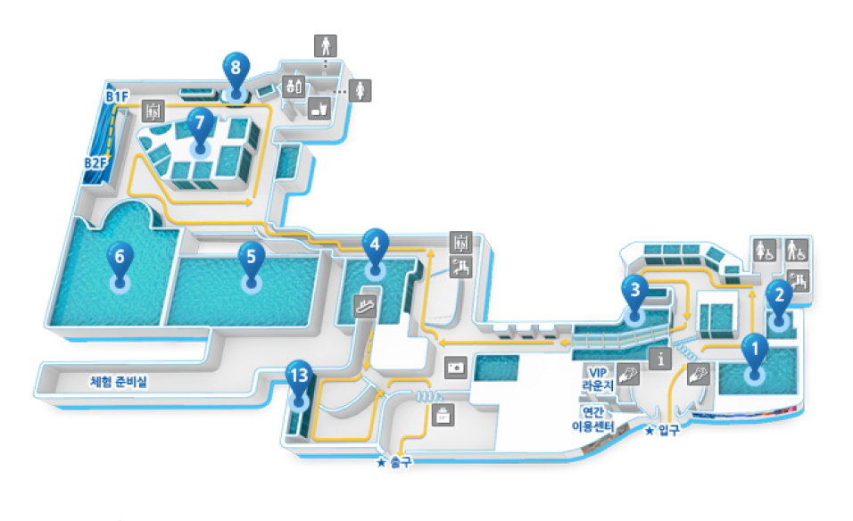-
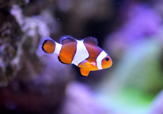
- 1. 네이처 존
- 화려한 색상의 디스커스와 마음을 평화롭게 하는 수초수조를 관람할수 있습니다.
-
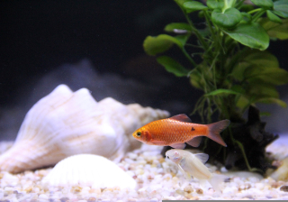
- 2. 라이프 존
- 따뜻한 열대지역 강의 생물들과 교감을 나눠보세요.
-
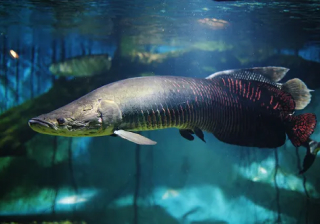
- 3. 열대우림의 강
- 몸집은 크지만 온순한 피라루크의 눈을 바라보며 대화를 해보세요.
-
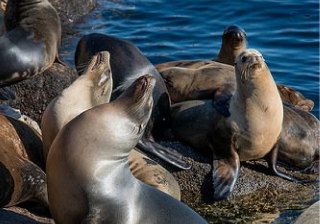
- 4. 바다사자 존
- 캘리포니아에서 온 우리바다사자는 시속 40km로 수영할 수 있고, 수심 247m까지 잠수가 가능하답니다!
-
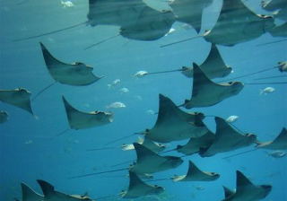
- 5. 디 오션
- 롯데월드의 심장 바로 메인수조입니다. 여러분은 여유로운 날개짓의 카우노즈레이의 군무를 감상하실 수 있습니다.
-
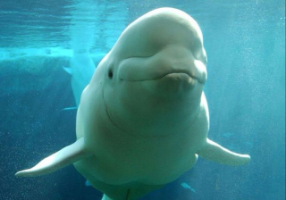
- 6. 밸루가 존
- 항상 웃는 표정을 가진 미소천사 벨루가는 하얀 피부색을 가진 똑똑한 고래랍니다.
-
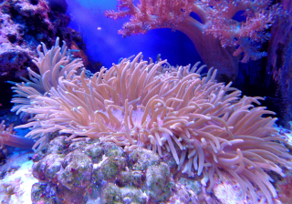
- 7. 산호초 가든
- 화려한 산호 틈 사이에 살고 있는 여러 해양 생물 친구들을 만나보세요!
-
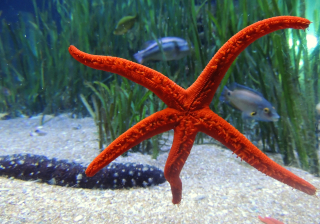
- 8. 플레이 오션
- 바다의 별, 불가사리부터 소라, 멍게 등 해안가에 쉽게 접할 수 있는 다양한 바다 속 가족을 만나보세요!
-
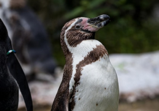
- 13. 극지방 존
- 가슴에 검은색 띠를 가지고 있는 훔볼트 펭귄의 매력이 궁금하시다면 펭귄월드 생태설명회에서 만나요.
B2F
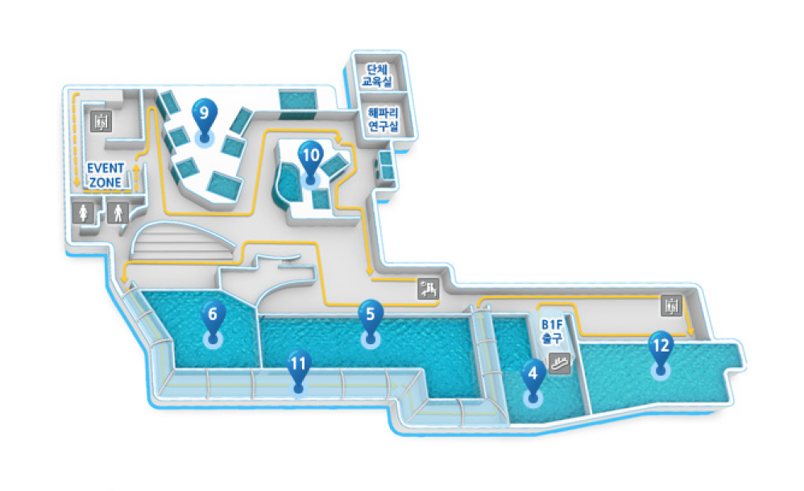-
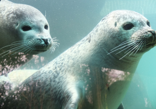
- 4. 바다사자 존
- 동글동글 눈망울이 너무나도 매력적인 우리의 바다사자입니다!
-
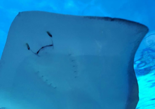
- 5. 디 오션
- 롯데월드의 심장 바로 메인수조입니다. 여러분은 여유로운 날개짓의 카우노즈레이의 군무를 감상하실 수 있습니다.
-
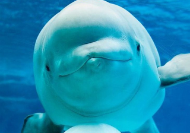
- 6. 벨루가 존
- 수조에 귀를 기울여 보세세요! 벨루가의 노랫소리가 들리시나요?
-
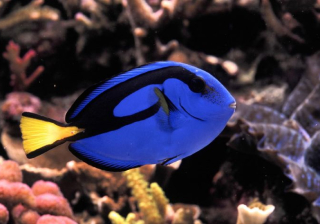
- 9. 해양 갤러리
- 화가나면 얼굴을 동그랗게 부풀리는 복어들과 화려한 모습의 블루탱의 모습을 보실 수 있습니다.
-
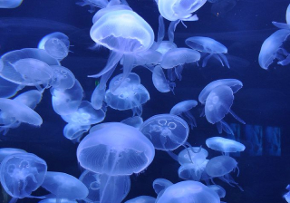
- 10. 해파리 갤러리
- 한마리의 나비처럼 음악에 맞춰 나플나플 거리는 해파리들을 보러 오세요!
-
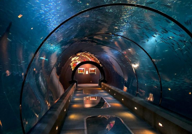
- 11. 오션 터널
- 우리의 해양친구들이 반갑게 인사하고 있네요! 여러분 느껴지시나요?
-
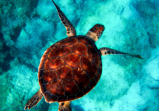
- 12. 바다거북 존
- 화려한 산호초와 열대해역에서 서식하는 매부리 바다거북과 독특하고 아름다운 물고기 등을 볼 수 있는 바다거북 존입니다.